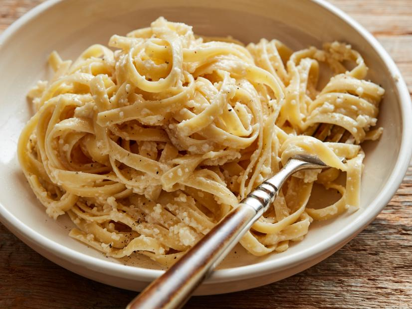

Fettucine Alfredo

Description
Pasta is a staple of the Western diet, and nothing is more authentic then this classic Italian dish.
Simple, clean, and elegant, fettuccine alfredo involves covering rich noodles in alfredo sauce.
This dish is simple and even a novice in the kitchen could create this dish quickly.
Ingredients
- 1 pound fettuccine noodles
- 1 stick of butter
- 1 cup of heavy butter
- Salt and freshly ground black pepper
- 2 cups freshly grated Parmesan
Steps
- Cook the pasta according to package directions.
- In a saucepan, warm the butter and cream. Add salt and pepper or any preferred seasonings.
- Place half of the Parmesan in a servings bowl.
- Pour the warm butter/cream mixture over the top.
- Drain the pasta and pour it into the bowl.
- Toss the pasta a couple of times and then add the other half of the Parmesan.
- Toss again to combine. Add water to thin the pasta if necessary.
- Serve as accompaniment to meat or salad.
Source
foodnetwork.com/recipes/ree-drummond/fettuccine-alfredo-2109163